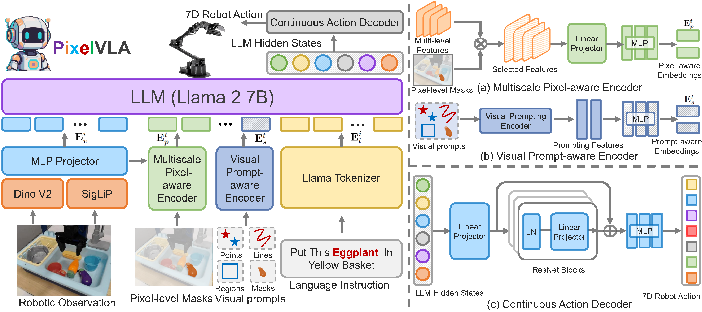
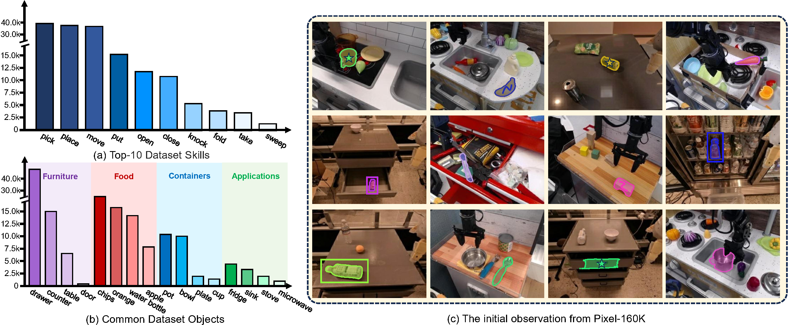

Overview
Existing VLAs are powerful but still limited by coarse image-level perception and their heavy dependence on textual instructions. PixelVLA addresses both issues by introducing pixel-aware representations and prompt-aware conditioning into a VLA framework.
The core idea is simple: instead of asking a robot to infer everything only from a whole image and a sentence, PixelVLA lets the model use pixel masks and visual prompts such as points, lines, regions, and masks. This makes spatial grounding more precise and makes human-robot interaction more flexible.
To make this possible at scale, the paper also introduces Pixel-160K, a new pixel-annotated visuomotor instruction-tuning dataset generated with a two-stage automated annotation pipeline.
Why it matters
Fine-grained spatial understanding is critical for precise manipulation in cluttered scenes.
What is new
A unified VLA framework that supports pixel masks and diverse visual prompts out of the box.
What it shows
Strong gains on zero-shot manipulation and adaptation to new robot setups with modest cost.
Method
PixelVLA extends a VLA backbone with three task-specific modules that inject pixel information, preserve prompt geometry, and decode continuous 7D robot actions.

Visual Prompt-aware Encoder
Encodes points, lines, regions, and masks into prompt-aware embeddings while preserving their image-space geometry through positional encoding.
Multiscale Pixel-aware Encoder
Injects fine-grained pixel information from multilevel visual features into the token stream, improving object-level grounding and spatial precision.
Continuous Action Decoder
Predicts continuous 7D actions from LLM hidden states, avoiding the loss of fine detail caused by coarse action discretization.
Pixel-160K Dataset
Pixel-160K is a pixel-annotated visuomotor instruction-tuning dataset built from existing robot demonstrations, with mask annotations and visual prompts for large-scale training.

160K Episodes
Robot manipulation episodes annotated for pixel-level grounding.
6.5M Triplets
Image-text-action triplets enriched with masks and visual prompts.
Gripper-aware region proposal
The pipeline localizes gripper-close states, composes a discrete video across episodes, segments the gripper, and builds robust region proposals for the likely target object.
Multimodal object segmentation
An LLM extracts the target object from the task instruction, then Grounding DINO and SAM produce object masks and visual prompts such as points, lines, and boxes.
This dataset is the bridge between large-scale robot demonstrations and pixel-aware VLA training.
Training Pipeline
PixelVLA is trained with a two-stage visuomotor instruction-tuning procedure that first learns continuous action prediction and then strengthens pixel-level understanding with lightweight adaptation.
Continuous Action Training
Initialize from pretrained VLA weights, remove the prompt-aware and pixel-aware modules, freeze most of the backbone, and train the continuous action decoder with L1 regression.
Training data: Fractal + Bridge v2
Pixel-level Understanding Enhancement
Fine-tune the LLM with LoRA while jointly training the visual prompt-aware encoder, the multiscale pixel-aware encoder, and the continuous action decoder on Pixel-160K.
Goal: better grounding, stronger prompt responsiveness, lower training cost
Results
PixelVLA improves both zero-shot manipulation and adaptation to new robot setups across SimplerEnv and LIBERO. Below are selected headline numbers from the paper.
SimplerEnv · Google Robot
Average success rateSimplerEnv · WidowX
Average grasp / successLIBERO Benchmark
Average success rate| Benchmark | Setting | Baseline | PixelVLA | Gain |
|---|---|---|---|---|
| SimplerEnv Google Robot | Visual Matching | OpenVLA 32.7 | 61.4 | +28.7 |
| SimplerEnv Google Robot | Variant Aggregation | OpenVLA 40.0 | 50.1 | +10.1 |
| LIBERO | Average success | OpenVLA 76.5 | 86.7 | +10.2 |
| WidowX (π0 backbone) | Average success | π0 27.1 | 33.8 | +6.7 |
Robustness to Visual Variations
Beyond average scores, the paper shows that PixelVLA remains stronger under camera changes, lighting shifts, background changes, distractors, and table texture variations.

Key takeaway
The gains are not limited to one benchmark or one robot. Pixel-aware grounding and visual prompting make the policy more reliable when perception becomes ambiguous or the environment shifts away from the nominal setup.
Ablation insight
The paper also shows that both ingredients matter: continuous action training improves performance, and the pixel-level enhancement stage adds another substantial boost on top of it.
BibTeX
Use the following citation for this work.
@inproceedings{liang2026pixelvla,
title={PIXELVLA: Advancing Pixel-level Understanding in Vision-Language-Action Model},
author={Liang, Wenqi and Sun, Gan and He, Yao and Dong, Jiahua and Dai, Suyan and Laptev, Ivan and Khan, Salman and Cong, Yang},
booktitle={International Conference on Learning Representations},
year={2026}
}